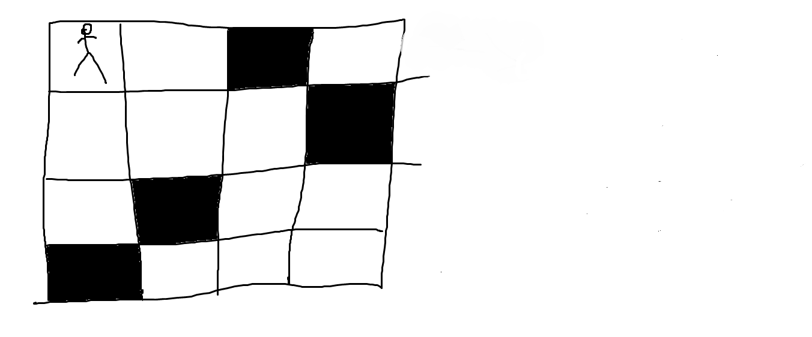
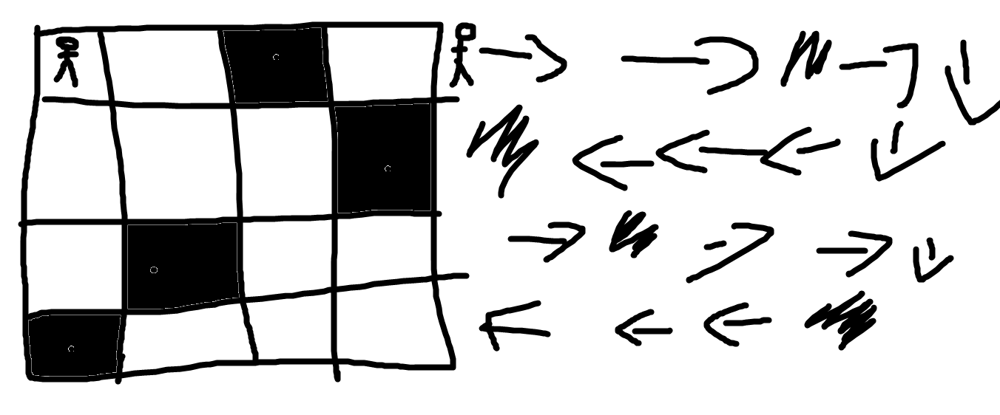

Како се решава дебагирање
Забелешка: ги пишуваме стрелките во линијата во која решаваме како на сликава подолу
Забелешка 2: Кога ќе стигнеме кај обоените делови од задачата, боиме пред да ставиме друга стрелка!
Забелешка 3: Секогш почниваме од лево кон десно
